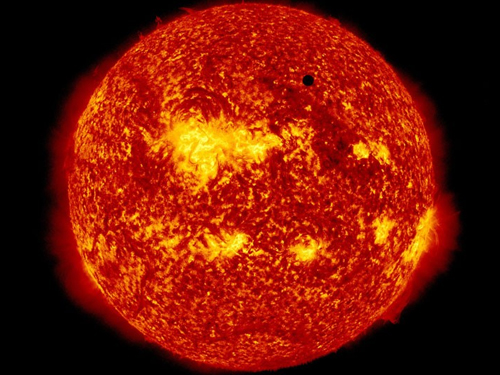

There are many things outside our world that many of us donot know. Are you not curious that are we alone in this world? Is there not any life outside the earth? Are there aliens? This is the biggest question and mystery that many people trying to find out.
Stars are giant, luminous spheres of plasma. There are billions of them — including our own sun — in the Milky Way Galaxy. And there are billions of galaxies in the universe.
The Sun is the star at the center of the Solar System and is by far the most important source of energy for life on Earth. It is a nearly perfect spherical ball of hot plasma, with internal convective motion that generates a magnetic field via a dynamo process. Its diameter is about 109 times that of Earth, and it has a mass about 330,000 times that of Earth, accounting for about 99.86% of the total mass of the Solar System. About three quarters of the Sun's mass consists of hydrogen; the rest is mostly helium, with much smaller quantities of heavier elements, including oxygen, carbon, neon and iron.
The Moon is Earth's only natural satellite. It is one of the largest natural satellites in the Solar System, and the largest among planetary satellites relative to the size of the planet that it orbits.
A galaxy is a gravitationally bound system of stars, stellar remnants, interstellar gas, dust, and dark matter. The word galaxy is derived from the Greek galaxias (γαλαξίας), literally "milky", a reference to the Milky Way. Galaxies range in size from dwarfs with just a few thousand (103) stars to giants with one hundred trillion stars, each orbiting its galaxy's center of mass.

The Milky Way is the galaxy that contains our Solar System. Its name "milky" is derived from its appearance as a dim glowing band arching across the night sky whose individual stars cannot be distinguished by the naked eye. The term "Milky Way" is a translation of the Latin via lactea, from the Greek γαλαξίας κύκλος (galaxías kýklos, "milky circle"). From Earth, the Milky Way appears as a band because its disk-shaped structure is viewed from within. Galileo Galilei first resolved the band of light into individual stars with his telescope in 1610. Until the early 1920s, most astronomers thought that the Milky Way contained all the stars in the Universe.